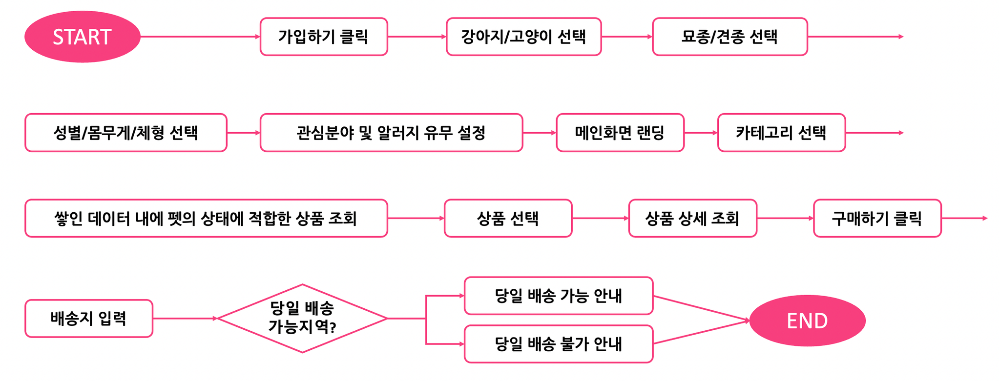
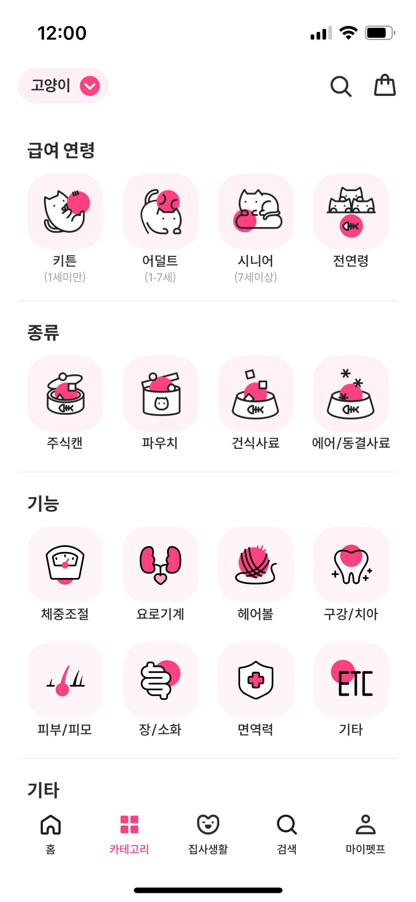
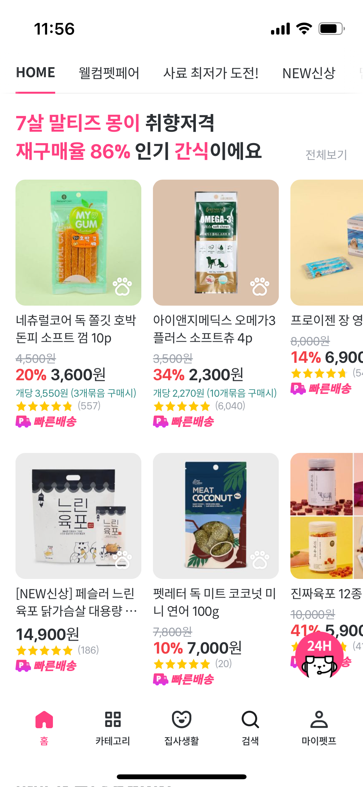
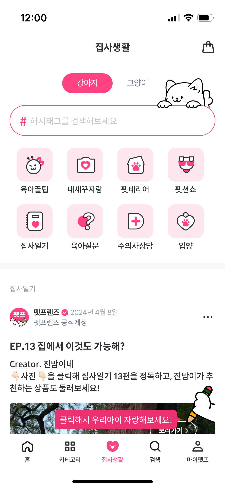

펫프렌즈
맞춤 추천과 돌봄 정보는 반려동물 전문몰을 선택할 이유가 되는가?
반려동물별 상품 추천과 배송을 제공하는 반려동물 전문 커머스.
학습 목적쿠팡과 비교해 반려동물 정보 수집·맞춤 추천·리뷰·돌봄 콘텐츠가 상품 선택과 재방문을 돕는 방식을 분석했습니다. 쿠폰 종류와 관리자 항목, CS 운영의 기획 범위도 정리했습니다.
개인 학습 기록 · 관찰한 경험, 기획 의도에 대한 해석, 개선 제안을 구분해 정리했습니다. 수치·요금·정책은 분석 당시 조사한 자료이며 현재 기준이나 직접 만든 성과가 아닙니다.
01사용자와 해결 방향
누구를 위한 서비스인가반려동물을 잘 돌보고 싶지만 상품 정보와 탐색 시간이 부족한 보호자.
Why · 사용자가 찾는 이유
반려동물에게 맞는 먹거리와 용품을 고르고 싶지만, 제품 지식과 비교할 시간이 부족하다. 필요한 물품을 빠르게 받고 돌봄 정보도 얻고 싶다.
What · 제공 경험과 해결 방식
반려동물의 종류·나이·특성에 맞는 상품 추천과 전문 정보, 빠른 배송을 제공한다. 다른 보호자의 리뷰와 돌봄 경험을 참고하며 상품을 선택할 수 있다.
시간 부족과 정보 부족을 다른 문제로 보기
반려동물을 돌볼 시간·체력이 부족한 보호자에게는 맞춤 추천과 당일배송, 상품 지식이 부족한 보호자에게는 전문 상품 정보를 제시하는 구조로 정리했다. 이를 뒷받침하는 IT 기반 물류와 365일 배송도 함께 살폈다.
02핵심 기능과 벤치마킹
- 반려동물 맞춤 추천
- 강아지·고양이 등 돌봄 맥락에 따라 상품 구성을 달리함.
- 전문 상품·리뷰
- 상품 특성과 실제 사용자 정보를 구매 판단에 연결.
- 돌봄 정보 공유
- 제품 외에도 돌봄 팁·병원·생활 정보를 나누며 재방문 유도.
비교해서 살펴본 지점
- 쿠팡
- 배송 편의가 유사할 때 전문몰을 선택하게 하는 차이를 비교.
쿠팡과 같은 배송 편의, 다른 선택 이유
배송 속도만으로는 전문몰의 이유를 설명하기 어렵다. 강아지·고양이별 정보 구성, 반려동물 특성을 반영한 친근한 디자인, 전문 상품 설명이 가족에게 맞는 제품을 고른다는 신뢰를 만든다고 해석했다.
03사용자 흐름과 기획 의도
관찰한 경험
- 반려동물별 상품 구성, 맞춤 추천, 구체적인 배송 시간과 사용자 프로필이 담긴 리뷰를 분석했습니다.
- 유사하게 보이는 카테고리 아이콘은 텍스트를 다시 읽어야 구분할 수 있다는 불편을 기록했습니다.
맞춤 추천을 만드는 정보 수집 순서
반려동물의 종류·나이·품종·건강 관심사를 입력하고, 등록한 정보에 맞는 상품을 제안하는 흐름을 분석했다. 추천 결과뿐 아니라 그 전에 어떤 정보를 받아야 하는지에 주목했다.

크게 보기 ↗왜 이렇게 설계했을까 · 나의 해석
- 강아지·고양이에 맞춘 정보와 시각적 표현이 전문 쇼핑몰이라는 인식을 만든다고 봤습니다.
- 맞춤 추천은 탐색 시간을 줄이고, 돌봄 팁을 나누는 커뮤니티는 상품 구매 이외의 재방문 이유가 된다고 해석했습니다.
04문제와 개선 제안
Pain Point · 걸리는 지점
- 카테고리 아이콘이 서로 비슷해 텍스트를 읽어야 구분할 수 있었다.
- CS 불편을 살펴보며 화면뿐 아니라 문의 대응의 운영 기준도 기획 범위인지 질문했다.
내가 바꿔본다면
- 카테고리 아이콘의 형태와 의미를 구별해 빠르게 인지할 수 있도록 개선.
- 쿠폰의 발행 대상·유효기간·운영 화면과 CS 대응 기준까지 기획 범위를 확장해 검토.

크게 보기 ↗05장점과 아쉬운 지점
좋았던 점
- 반려동물에 맞춘 정보와 표현이 전문성을 전달한다.
- 배송 시간과 프로필이 함께 보이는 리뷰가 판단을 돕는다.
아쉬운 점 · 더 살필 점
- 아이콘의 시각적 차이와 고객 문의 처리의 일관성을 함께 점검해야 한다.
구매 판단을 돕는 세 가지 표현
- 움직이는 썸네일
- GIF로 상품을 미리 파악해 상세 화면에 들어가기 전에도 판단 가능.
- 도착 시각
- 새벽 도착 시간을 구체적으로 알려 기대 시점을 명확히 함.
- 리뷰의 실재감
- 리뷰 수와 실제 사용자 프로필을 함께 보여 신뢰를 높이는 구성.
06내가 주목한 점
쿠폰 관리자 항목까지 구체화
화면에서 보이는 혜택을 넘어 신규·첫 구매·일반회원·등급·생일 쿠폰을 운영하려면 어떤 입력과 제한 조건이 필요한지 정리했다.
| 설계 범위 | 관리 항목 |
|---|---|
| 기본 정보 | 쿠폰 종류·쿠폰명·설명 |
| 기간 | 행사 기간·쿠폰 사용 기간 |
| 혜택·대상 | 할인 금액·최저/최대 사용 금액·회원등급 제한 |
| 노출·발행 | 쿠폰 이미지·배너 이미지·발행 위치 |
| 운영 제어 | 사용 구분·발행 개수·사용 여부 |
구매가 없을 때도 돌아올 이유
맞춤 추천은 상품 탐색의 수고를 줄이고, 댕댕케어 비법 채널은 돌봄 팁·병원·입양 등 생활 정보를 나누는 이유를 만든다. 재방문을 할인에만 의존하지 않는 구조로 해석했다.

크게 보기 ↗
크게 보기 ↗후속 질문 · CS도 기획의 범위일까?
고객응대의 불편을 살펴보며 문의 분류와 처리 기준도 서비스 기획자가 함께 정해야 하는지 질문했다. 운영 체계를 구축한 경험이 아니라, 추가로 검토할 과제로 남긴 내용이다.
기획에 가져갈 기준
- 전문성은 상품 구성뿐 아니라 분류·표현·추천 방식에서 체감된다.
- 쿠폰의 대상·기간·사용과 관리자 발행 기능, CS 기준을 함께 설계할 것.